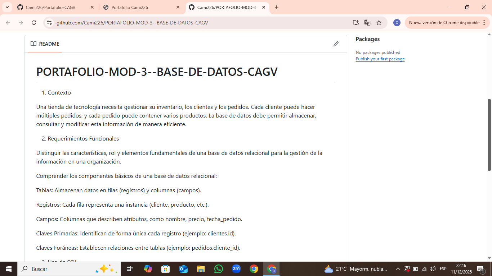
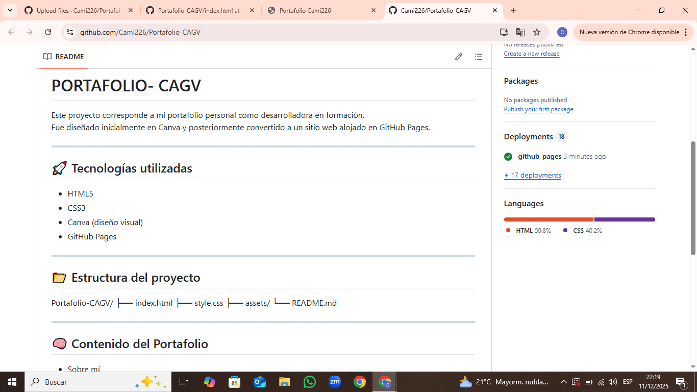

Proyectos

Gestión de Tienda - Base de Datos
Base de datos relacional para gestionar clientes, pedidos y productos de una tienda de tecnología.
Tecnologías: MySQL, SQL, DDL, DML

API CRUD Java & Spring
Proyecto académico usando Java, Spring y MySQL para gestionar datos.
Tecnologías: Java, Spring Boot, MySQL

Portafolio Web
Mi portafolio personal desarrollado con HTML, CSS y GitHub Pages.
Tecnologías: HTML, CSS, GitHub Pages